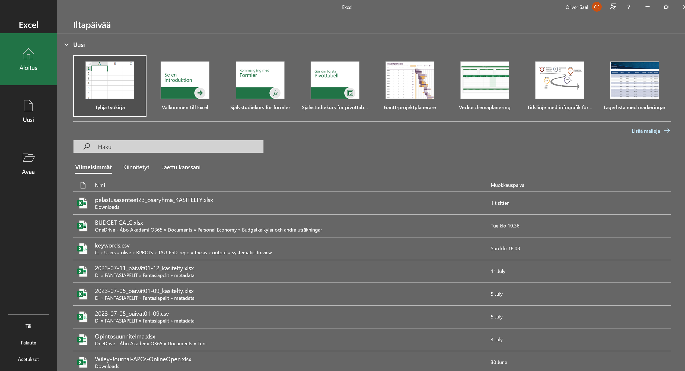
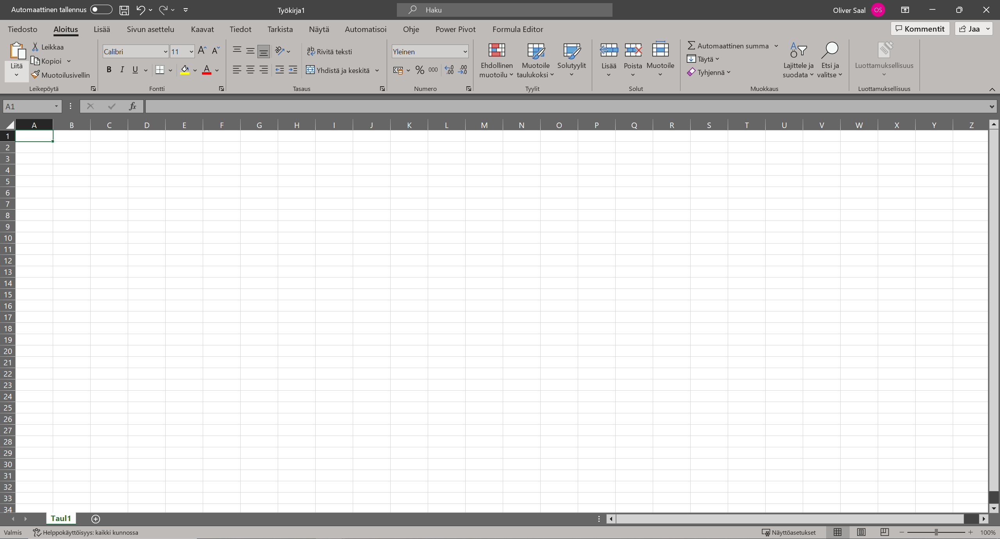
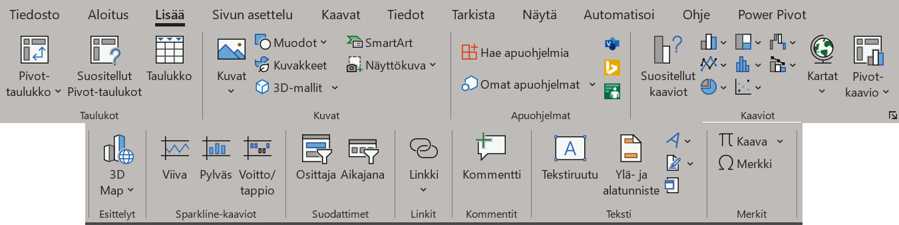
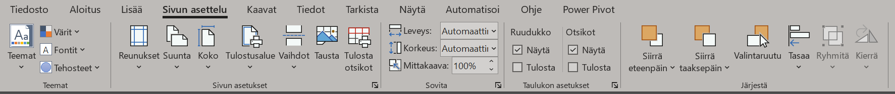
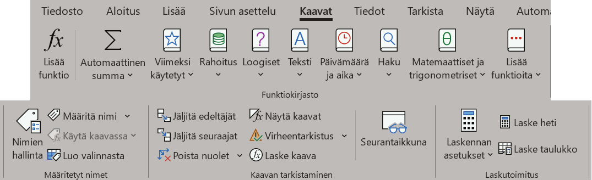

4 Excelin käyttöliittymä
Kun avaat Excelin ensimmäistä kertaa, näet sovelluksen aloitusnäkymän (Kuva 4.1). Näkymästä voit avata uuden työkirjan painamalla “Tyhjä työkirja”-kuvaketta ylävasemmalla. Hakupalkin alle tulee listaus viimeisimpiä työkirjoja, joita olet avannut. Voit avata olemassa olevan työkirjan painamalla “Avaa”-nappia oikeanpuoleisesta valikosta, ja hakemalla työkirjan tietokoneeltasi.

4.1 Perusnäkymä
Työkirja on Excel-tiedosto, joka sisältää kaikki analyysisi ja tietosi. Avaamalla tyhjän työkirjan pääset Excelin perusnäkymään (Kuva 4.2).

Perusnäkymä voidaan jakaa kolmeen osaan, ylhäältä alas. Ylimpänä löydät navigointipalkin, joka on jaettu useaan eri välilehteen. Välilehtien määrä voi vaihdella riippuen Excel-versiostasi ja asennetuista lisäosista, mutta sinulla on ainakin seuraavat välilehdet: Aloitus, Lisää, Sivun asettelu, Kaavat, Tiedot, Tarkista, Näytä ja Ohje. Välilehdet muuttavat, mitä työkaluja näet navigointipalkissa.
Navigointipalkin alla löydät työlehtiönäkymän. Excelissä tietoa käsitellään lehtiömuodossa, joka jakaa sivun riveihin ja sarakkeisiin. Rivit ovat numeroituna yhdestä ylöspäin, ja sarakkeet aakkosjärjestyksessä A:sta Z:aan. Z:an jälkeen tulee AA, AB, AC ja niin eteenpäin. Tällä alueella tulet näkemään datasi, ja teet myös kaikki laskutoimintosi, grafiikkasi ja muut taulukkosi.
Työlehtiönäkymän alla on taulukonvalitsin, josta näet kaikki työlehtiöt, jotka sinulla on. Tyhjässä työkirjassa on yksi lehtiö, “Taul1”, mutta voit laatia uusia lehtiöitä painamalla +-merkkiä viimeisen lehtiön nimen vieressä.
Oikeaklikkaamalla työlehtiön nimeä saat esille lehtiön muokkausmenun (Kuva 4.3).

Muokkausmenusta löytyy seuraavat kätevät valinnat:
PoistaPoista valittu työlehtiö.Nimeä uudelleenMuuta valitun työlehtiön nimeäSiirrä tai kopioi...Avaa menun, jossa voit vaihtaa lehtiöiden järjestystä, sekä luoda kopion olemassa olevasta lehtiöstä. Voit myös siirtää ja kopioida lehtiöitä avointen työkirjojen välillä, jos sinulla on auki useampi kuin yksi työkirja.Taulukonvalitsimen väriVaihda työlehtiön väri taulukonvalitsimessa. Voi auttaa, jos sinulla on monia työlehtiöitä etkä pysy kärryillä niistä.PiilotajaNäytä...Voit piilottaa työlehtiön näkyvistä. Piilotetut lehtiöt löytyvätNäytä...-toiminnosta, josta voit tuoda ne takaisin näkyville. Toiminnot eivät poista lehtiöitä.
4.2 Navigointipalkin työkalut
Tässä luvussa käydään läpi kaikki tärkeimmät navigointipalkin työkalut. Tulet käyttämään joitain näistä useasti, joten yritä oppia ulkoa tärkeimpien sijainnit.
4.2.1 Aloitus-välilehti
Aloitus-välilehdeltä löydät yleisimmät tekstimuotoilutyökalut sekä jotkut muokkaus- ja suodatustyökalut (Kuva 4.4).

Leikepöytä-alueelta löydät työkaluja leikkaamiseen ja liittämiseen. Suosittelen kuitenkin oppimaan ulkoa seuraavat näppäinkomennot jos et jo osaa: Ctrl+C (kopioi), Ctrl+V (liitä) ja Ctrl+X (leikkaa). Excelissä on myös oma toiminto nimeltä Liitä määräten, jolla voit määrätä, missä muodossa kopioitu asia liitetään. Saat tämän auki käyttämällä komentoa Ctrl+Alt+V yleisen liittämiskomennon sijaan. Voit valita liitettäväksi esim. vain tiedot ilman muotoilua, kaavat mutta ei tiedot, tiedot mutta ei kaavat, ja niin eteenpäin.
Fontti-alueelta löydät yleiset tekstin muotoilun työkalut. Löydät myös työkaluja joilla muotoilla soluja: alleviivauksen jälkeen tulee, järjestyksessä, solun reunaviivatyökalu (piirrä reunaviivoja valittujen solujen ympärille), solun väri (vaihda solun väriä), ja tekstin väri (vaihda tekstin väriä).
Tasaus-alueelta löydät tekstin tasausasetukset, sekä pysty- että vaakajärjestyksessä. Voit myös yhdistää monta solua yhdeksi Yhdistä ja keskitä-toiminnon avulla, mikä voi olla avuksi luettavuuden kannalta. Rivitä teksti-työkalulla määrität tekstin automaattisesti jakautumaan riveihin jos se ylittää solurajan.
Numero-alue määrittelee lukujen muotoilun. Excel on tiukka muotoilemaan numerot vaikka mihin muotoihin, mutta tällä alueella voit itse sanoa Excelille, “Ei, tuo numero ei ole päivämäärä vaikka kuinka haluaisit!”. Voit myös muotoilla valuutta-arvojen muodot, desimaaliluvut prosenteiksi, sekä lisätä tai poistaa desimaaleja näkyviltä. Muotoilu ei vaikuta alla piilevään lukuun, eli toiminnot ovat vain esteettisiä1.
Tyylit-alueella voit tehdä erinäisiä muotoilutyylejä, muuttaa taulukkoja helposti haettaviksi taulukoiksi, ja muotoilla soluja valmiilla tyylillä. Tutustu omassa rauhassasi, emme tule käyttämään näitä sen kummemmin kurssilla.
Solut-alueella voit lisätä, poistaa tai muotoilla soluja.
Muokkaus-alueella löytyy erinäisiä muokkaustyökaluja, joista Lajittele ja suodata on ehkä tärkein. Voit lajitella valitun solualueen tietyn arvon mukaan, sekä suodattaa näkyville vain tietyt arvot.
4.2.2 Lisää-välilehti
Lisää-välilehdeltä löydät toiminnot, joilla voit tehdä kaavioita, lisätä kommentteja ja tekstiruutuja, sekä kirjoittaa matemaattisia kaavioita (Kuva 4.5).

Taulukot-alueelta löydät työkalut Pivot-taulukkojen tekemiseen. Emme käytä näytä kurssilla, mutta ne ovat erittäin tehokkaita työkaluja datan analysointiin ja visualisointiin.
Kuvat-alueella voit lisätä kuvia, geometrisiä muotoja, SmartArt-kaavioita ja muita visuaalisia elementtejä. Nämä eivät kuitenkaan reagoi dataasi, eli ne ovat ihan vain visuaalisuutta lisääviä asioita.
Apuohjelmat-alueella voit avata ja asentaa lisätoimintoja.
Kaaviot-alueella löydät kaikki Excelin kaaviomuodot grafiikan tekoa varten. Tulet käyttämään näitä useasti.
Muista alueista tärkeimmät ovat Kommentit, josta löydät kommentointityökalun, sekä Teksti, josta voit lisätä vapaamuotoisia tekstiruutuja omia muistiinpanoja tai selitteitä varten. Voit myös lisätä matemaattisia kaavoja Merkit-alueen Kaava-työkalulla, jos haluat näyttää älykkäältä. Nämä kaavat eivät tee mitään Excelissä - laskelmia varten käytetään Excelin omia funktioita.
4.2.3 Sivun asettelu -välilehti
Sivun asettelu -välilehdeltä löydät työkaluja, joilla muotoilet työkirjan tulostusnäkymää (Kuva 4.6).

Tärkeimmät työkalut löytyvät Sivun asetukset-alueelta. Näillä voit muuttaa työlehden muotoilua tulostusnäkymässä, jos haluat tulostaa työlehtesi ja vaikkapa ripustaa sen seinälle.
Joskus sattuu niin, että grafiikkasi ovat päällekäisiä etkä näe kaikkea kunnolla. Voit vaihtaa kaavojen ja kuvien välistä järjestystä Järjestä-alueella, sekä tasata niitä samaan riviin eri tavoin.
4.2.4 Kaavat-välilehti
Kaavat-välilehdeltä löydät funktioihin liittyviä työkaluja (Kuva 4.7). Täältä löytyy myös erittäin tärkeä Nimien hallinta -osio (ks. LUKU NIMIEN HALLINNASTA).

Ensimmäinen alue on nimeltään Funktiokirjasto, ja sisältää luettelon kaikista Excelin funktioista. Jos et muista funktion nimeä, voit hakea sen käsiisi täältä. Voit myös hakea funktioita sanoilla Lisää funktio-työkalulla.
Seuraavaksi tulee Määritetyt nimet-alue, josta pääset nimien hallintaan. Täällä voit määritellä omia “lempinimiä” solualueille, funktioille ja melkein mille tahansa muulle. Sen sijaan, että joudut joka kerta viittaamaan tietyn muuttujan solualueelle, voit nimetä alueen vaikkapa “sukupuoli”, ja viitata suoraan siihen nimeen!
Jotkut funktiot eivät automaattisesti päivity kun teet muutoksia työlehtiössäsi. Voit päivittää kaikki funktiot ja laskutoimitukset Laskutoimitukset-alueelta painamalla Laske heti tai Laske taulukko.
4.2.5 Tiedot-välilehti
Tiedot-välilehdeltä löydät työkaluja tietokantayhteyksien käsittelyyn, sekä automaattisen datan uudelleenmuotoilun työkalut. Emme tule tarvitsemaan näitä kurssilla, mutta näiden avulla voit esim. automaattisesti hakea dataa jostain verkkotietokannasta tai muusta päivittyvästä tiedostosta.
4.2.6 Tarkista-välilehti
Tarkista-välilehdestä löytyy erinäisiä työkaluja oikeinkirjoituksen tarkistukseen, kommenttien käsittelyyn sekä työkirjan suojaamiseen. Näistä useimmiten käytetyt lienee Kommentit-alue, josta voit lisätä, poista ja näyttää tai poistaa näkyviltä kommentteja.
4.2.7 Näytä-välilehti
Näytä-välilehdellä voit muuttaa Excelin näkymää hieman.
Voit vaihtaa tulostusnäkymän ja normaalin näkymän välillä Työkirjanäkymät-alueella.
Erittäin hyödyllinen toiminto on myös Ikkuna-alue, jolla voit avata saman työkirjan useampaan eri ikkunaan. Näin voit nähdä eri työlehtiöitä tai alueita samaan aikaan samalla näytöllä. Voit myös kiinnittää ensimmäisen rivin/sarakkeen, jotta ne pysyvät näkyvillä vaikka siirryt muualle.
Paitsi, että jos tietty funktio odottaa tiettyä lukumuotoilua (esim. päivämäärä) ja annat sille jotain muuta (esim. luvun), syntyy odottamattomia tuloksia. Tarkista aina lukujen muotoilut jos/kun syntyy virheitä ja ongelmia!↩︎